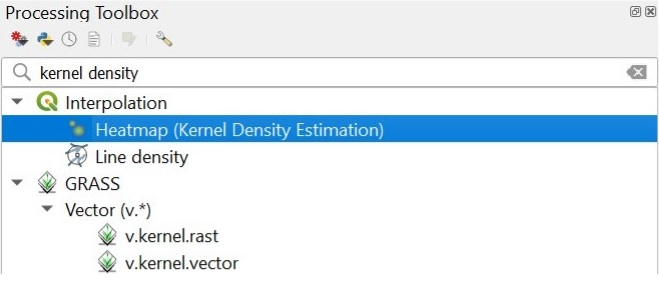

1.0 Data Sources
| Data Source | Name | Description | Link |
|---|---|---|---|
| Indonesia Geospatial | BATAS DESA DESEMBER 2019 DUKCAPIL KALIMANTAN TIMUR | Village boundary and population data for East Kalimantan 2019 | https://www.indonesia-geospasial.com/2020/04/download-shapefile-shp-batas-desa.html |
| Indonesia Geospatial | Geology Kalimantan Timur | Geology Shapefile of East Kalimantan | https://www.indonesia-geospasial.com/2020/03/download-data-shapefile-shp-geologi-se.html |
| Indonesia Geospatial | KOTA BALIKPAPAN | Topographical data layers of Balikpapan City | https://www.indonesia-geospasial.com/2020/01/shp-rbi-provinsi-kalimantan-timur.html |
| Indonesia Geospatial | KOTA SAMARINDA | Topographical data layers of Samarinda City | https://www.indonesia-geospasial.com/2020/01/shp-rbi-provinsi-kalimantan-timur.html |
| Indonesia Geospatial | KUTAI KARTANEGARA | Topographical data layers of Kutai Kartanegara Regency | https://www.indonesia-geospasial.com/2020/01/shp-rbi-provinsi-kalimantan-timur.html |
| Indonesia Geospatial | OSM Buildings | Detailed building footprints throughout Indonesia | https://www.indonesia-geospasial.com/2020/12/download-shp-pemukiman-detail-seluruh.html |
| Indonesia Geospatial | PENAJAM PASER UTARA | Topographical data layers of Penajam Paser Regency | https://www.indonesia-geospasial.com/2020/01/shp-rbi-provinsi-kalimantan-timur.html |
| Indonesia Geospatial | 30. Provinsi Kalimantan Timur | Digital elevation model at 30m resolution | https://www.indonesia-geospasial.com/2020/01/download-dem-srtm-30-meter-se-indonesia.html |
| Indonesia Geospatial | Titik Api Hotspot se-Indonesia Tahun 2014 - 2019 | Indonesia fire Hotspot data from 2014-2019 | https://www.indonesia-geospasial.com/2020/04/shapefile-shp-titik-api-hotspot.html |
2.0 General Notes
2.1 Saving layers in GeoPackage format
Always remember to save all the layers in a GeoPackage format.
- Right click on the Layer Export Save Features As
The Save Vector Layer as dialogue box will appear.
- Format: GeoPackage
- File name: Navigate to the GeoPackage file in which you want to save your layer in Indonesia.gpkg
- CRS: Set this to the project CRS, ESPG: 23845 - DGN95 / Indonesia TM-3 zone 54.1.

- Click on OK and close the dialogue box.
- Delete the unnecessary layers after GeoPackaging it.
2.2 Coordinate Reference System
Name: EPSG:23845 DGN95/Indonesia TM-3 zone 54.1
Units: Meters
Method: Transverse Mercator
Celestial body: Earth
Reference: Static (relies on a datum which is plate-fixed)
3.0 Data Preparation
3.1 Selecting study area polygon
- Add BATAS_DESA_DESEMBER_2019_DUKCAPIL_KALIMANTAN_TIMUR layer, open attribute table and click on Select by Expression.
The Select by Expression dialogue box will appear.
- Under the Fields and Values drop-down list, double click on KECAMATAN which represents districts.
- Click on equal sign =
- Click on the All Unique button at the right column
- Add the expression into the expression pane as shown below to select the required study area.
- Click on Select Features and it should appear similar to what is shown below

- Right click on the Layer Export Save selected features as
- Geopackage the selected features and name the layer east_kalimantan.
3.2 Adding the necessary layers for analysis
We will now be adding layers we need for both the Report of Survey (Task 1) and Site Selection (Task 2). These layers can be found in the Kota Balikpapan, Kota Samarinda, Kutai Kartanegara and Penajam Paser Utara data files that were previously downloaded. For hotspots data, it can be found in the Titik Api Hotspot se-Indonesia Tahun data file from 2014 - 2019.
The following shapefile layers should be added to QGIS:
| English Name | Layer to be added |
|---|---|
| Agriculture - Plantation | Agrikebun |
| Agriculture - Rice field | Agrisawah |
| Agrifield | Agriladang |
| Airport points | Airport_PT |
| Airport polygons | Airport_AR |
| Bus terminals | Terminal Bus |
| Coastline | Pesisir |
| Education | Pendidkan |
| Electricity | Genlistrik & Menaralistrik |
| Forest - Wet | Non agri hutan basah |
| Forest - Dry | Non agri dry forest |
| Forest - Reed | Nonagrialang |
| Forest - Shrubs | Non agri semak belukar |
| Health Services | Layanan kesehantan |
| Hospitals | Rumah sakit |
| Hotspots | Titik Api Hotspot se-Indonesia Tahun 2014-2019 |
| Industry | Industri |
| Manufacturing | Further extracted from Industri layer called Industri Manufaktur Lainnya under REMARK |
| Mining - Coal | Further extracted from Industri layer called Pertambangan Batu Baraunder REMARK |
| Mining - Other | Further extracted from Industri layer called Pertambangan Lainnyaunder REMARK |
| Mining - Open (Surface Mining) | Tambang_AR |
| Phone Towers | Menaratelpon |
| River | Sungai_LN |
| Roads | Jalan |
| Seaport points | Pelabuhan_PT |
| Settlements | Pemukiman |
3.3 Merging layers
Since we have data scattered in different folders (e.g.road shapefiles from Kota Balikpapan, Kota Samarinda and more), we will be merging them into one layer for a cleaner QGIS environment. The layers in the table in section 3.2 should be merged as they are from the 4 different folders.
- From the top menu bar, select Vector Data Management Tools Merge Vector Layers.
- Under Input layers, click on the more icon at the end to select the layers in which you want to merge.
- For destination CRS, select the project CRS (EPSG:23845)
- Click on Run.
- A temporary merged layer will be created.
- The temporary layer should be clipped (section 2.3.4) to remove all unnecessary points and then saved into GeoPackage format.
Repeat this process of merging for all the other necessary layers
3.4 Clipping the various layers
We will be clipping the layers as mentioned above so that points outside of east_kalimantan will be cleaned away to keep only the points and polygons within our study area.
From the top menu bar, click on Vector Geoprocessing Clip

- For the Input layer, select from the drop down menu the layer in which we would like to clip. Note that all the layers merged in the previous section should be clipped.
- Click on the spanner beside the Input layer and select from the drop down menu Do not Filter (Better Performance).
- For Limit features processed, select Not set
- For Overlay layer, select east_kalimantan.
- Click on the spanner beside the Overlay layer and select from the drop down menu Do not Filter (Better Performance).
- Geopackage clipped layer and remove the temporary clipped layer and merged layers.
Repeat this process of clipping for all the other necessary layers.
4.0 Data cleaning
4.1 Road network
- Right click on the layer roads_merged and open attribute table.
- Select by expression the following roads: Jalan Arteri, Jalan Lokal, Jalan Kolektor.

- Next, save the selected features into the GeoPackage and name the layer connectingRoads.
4.2 Airport buffer
- We will first dissolve our airport polygon layer as we do not want to create multiple buffer for scenarios like this where there are 3 different polygons representing 1 airport
- Go to Vector Geoprocessing Tools Dissolve
- For the input layer, we will select Airport
Click on run
We will have a layer called Dissolved. Save it to the Geopackage and rename it as AirportDissolved
Next, we want to create a buffer zone of 3.5km to airport for our accessibility to airport
According to our research, a buffer zone of 3.5km from the airport zone will be used so as to minimize noise pollution in our proposed capital site.
Using the AirportDissolved layer, we will create a 3.5km buffer
Go to Vector > Geoprocessing tools > Buffer
- For the input layer, we will select AirportDissolved
- Distance will be 3500 meters or 3.5 kilometers is also acceptable
- Segments we will change to 100
- End cap style and Join style will be Round and Miter limit will be default at 2

- Click on Run
- A new layer called buffer will be created
- Save it to our Geopackage as AirportBuffer
4.3 Hotspot heatmap
- From the top menu bar, select Processing Toolbox search for kernel density
- Select Heatmap (Kernel Density Estimation)

In the Heatmap dialog window:
- Point layer: hotspots_merged
- Radius will be 15000 meters
- X and Y size pixels = 100

- Click on Run and close the dialogue box.
- Save this into the GeoPackage as hotspots_heatmap.
We will now change the symbology of this layer to better visualise it.
- Right click on the layer and click on Properties Symbology
- Render Type: Singleband Pseudocolour
- Colour Ramp: Red

The map should look like the image below:
5.0 Raster, proximity and slope
5.1 Extracting raster data
- Import the DEM SRTM 30M KALIMANTAN TIMUR layer.
- From the menu bar, select Raster Extraction Clip Raster by Extent.
- For Input layer, select DEM SRTM 30M KALIMANTAN TIMUR from the drop-down list.
- For Clipping extent, click on the icon at the end of the option then select Calculate from Layer.
- Select east_kalimantan from the drop-down list.
Click on Run
Geopackage the clipped raster
Make sure to change Format to Geopackage in the drop down list.
For Layer name, call it DEM.
Under extent, click on the drop down list Calculate from Layer and Select east_kalimantan.
Set resolution of 30m by 30m
- When we are ready, click on OK
5.2 Creating attribute field for rastering
- At the Layers panel, click on connectingRoads
- From the icon bar, click on the Open Attribute Table icon and click on Open field calculator
- For Output field name, type POI_CODE
- At the Expression pane, type 1
Click on the OK button to run the function.
A column called POI_CODE will be created.

5.3 Rastering the layers
- From the menu bar, select Raster Conversion Rasterise (Vector to Raster)
- For Input layer, select roads_merged from the drop-down list.
- For Field to use for a burn-in value, select POI_CODE from the drop-down list.
- For Output raster size units, select Georeferenced units.
- Keep both horizontal and vertical resolutions at 100 (meaning 100m by 100m resolution).
- For Output extent, click on Calculate from Layer
- Select DEM from the drop-down list.
- Click on the Run button.
- A temporary layer will be created.
- Geopackage the layer and call it connectingRoads_rasterized
Repeat for the rest of the dataset giving the names to each of the layers as shown below:
| Layer to be rasterized | Final Layer Name |
|---|---|
| disaster_merged (Note that this layer is formed by merging the river and coastline layers) | disaster_rasterized |
| forest | forest_rasterized |
| seaport | seaport_rasterized |
| connectingRoads | connectingRoads_rasterized |
| AirportBuffer | airport_rasterized |
| settlements | settlement_rasterized |
5.4 Proximity calculation
- For the menu bar, select Raster Analysis Proximity (Raster Distance).
- For Input layer, select roads_rasterized from the drop-down list.
- For Distance units, select Georeferenced coordinates from the drop-down list.
- For Output data type, select Float32 from the drop-down list.

- Click on the Run button.
- Geopackage the layer and name it connectingRoads_proximity
Repeat for the rest of the dataset giving the names to each of the layers as shown below:
| Layer to do proximity | Final Layer Name |
|---|---|
| disaster_rasterized | disaster_proximity |
| forest_rasterized | forest_proximity |
| seaport_rasterized | seaport_proximity |
| connectingRoads_rasterized | connectingRoads_proximity |
| airport_rasterized | airport_proximity |
| settlement_rasterized | settlement_proximity |
5.5 Slope calculation
- From the menu bar, select Raster Analysis Slope.
- For Input layer, select DEM_new from the drop-down list.
- Click on the Run button and Close the dialogue window.
- A temporary layer called Slope will be added.
- Set the resolution to 30m by 30m resolution.
- Geopackage layer and name it slope30by30
To ensure that our slope layer only covers the study area and not the sea boundaries, we will create a dissolve vector layer for the study area.
- From the top menu bar Vector Geoprocessing Tool Dissolve.
- Input layer select east_kalimantan.
- Advanced options: Do not filter (Better performance).
- Click on the OK button.
- Save to Geopackage name it StudyAreaSingle.
Next, we will clip raster by Mask Layer to get the raster layer of our slope in our study area
- From the top menu bar, select Raster Extraction Clip Raster by Mask Layer
- Input layer: slope30by30
- Mask layer: StudyAreaSingle

- Click on Run and close the window.
- Save the Clipped(mask) layer into GeoPackage and change the resolution to 100m by 100m.
- Name it as slopeStudyArea.
6.0 Choosing a suitable site
6.1 Standardising the data using Z-Score
We will be using Raster calculator to standardise the proximity layers. The following Z-score equation is used for standardisation.
To get the minimum and maximum values used for standardisation, right click on the particular proximity layer, disaster_proxmity and navigate to the Information tab. The minimum and maximum values can be found there.
- From the top menu bar, click on Process Toolbox
- A side pane will appear on the right.
- Double click on Raster calculator.
Use the standardisation equation as mentioned above and key it into the expression pane as shown in the image below.

- Click on the Run button and close the window
- Export the layer as a GeoPacakge and name it factor_disaster.
Repeat this for all other proximity layers
Note that for layers in which we want to be close to, we will inverse the standardisation using (1 - Zvalue). After standardizing, we save the respective results as:
| Layer to perform standardization | Inverse (1-Zscore) | Final Layer Name |
|---|---|---|
| disaster_proximity | No | factor_disaster_new |
| forest_proximity | No | factor_forest |
| hotspots_heatmap | Yes | factor_hotspot |
| seaport_proximity | Yes | factor_seaport |
| connectingRoads_proximity | Yes | factor_connectingRoad |
| airport_proximity | Yes | factor_airport |
| slope | Yes | factor_slope |
| settlement_proximity | Yes | factor_settlement |
6.2 AHP calculation
Using the Raster calculator, we will now calculate the composite factor score using the following AHP importance ranking and weights. Our team achieved a consistency score of 4% and thus we will proceed with the following AHP weightage.

We created the AHP suitability layer with the following calculation:
(factor_disaster_new@1 * 0.327) + (factor_forest@1* 0.227) + (factor_hotspot@1 * 0.157) + (factor_seaport@1 * 0.108) + (factor_connectingRoad@1 * 0.073) + (factor_airport@1 * 0.05) + (factor_slope@1 * 0.0340) + (factor_settlement@1 * 0.024)
- Our reference layer will be any one of the factor layers that we have
- Output CRS will be EPSG:23845 DGN95/Indonesia TM-3 zone 54.1
- Click on Run and close the dialogue box after a new temporary layer is created.
- Save the temporary layer as a GeoPackage and name it AHP.
From our analysis we decided that a composite factor score of 0.4 should be used as a cut-off for suitable sites. Now, we will use the function Reclassify by table to separate the sites into suitable and not suitable.
- From the Processing Toolbox, search for Reclassify by table and double click on it.

The dialogue box for Reclassify by table will appear.
- Raster layer: AHP
- Click on the more icon under Reclassification table and enter the following as shown below.
- Click OK to return to the previous screen
- For range boundaries select: min <= value < max Your dialogue box should look like the screenshot below
- Click on Run and close the dialogue box.
- Save this temporary Reclassified raster layer into the GeoPackage
- Name this layer MCDA_model.
The MCDA_model should look like the screenshot below. White portions indicate suitable sites while black portions indicate non suitable sites.
6.3 Vectorizing suitable sites
Now we need to convert the MCDA_model raster layer into a vector.
- From the top menu bar, select Polygonize (Raster to Vector)
The Polygonize (Raster to Vector) dialog window appears.
- For Input Layer, select MCDA_model from the drop-down list.
- For Name of the field to create, type Sites.
- Keep the checkbox in front of Use 8-connectedness uncheck.
- Click on Run and close the window.
- A temporary layer called Vectorized will be added to the layers panel.
- Open the attribute table of this Vectorized layer.
- Note that there is a column called Sites with values 0 and 1.
- 0 indicates not suitable while 1 indicates suitable.
- Click on select by expression and enter the following expression into the expression box.

- The sites which are 0 (not suitable) are selected.
- Click on the Toggle Editing Button.
- Click on Delete Selected to remove all the non suitable sites.

- Export the layer into a GeoPackage.
- Name this layer AHP_suitability.
- The suitable sites are the polygons in green as shown in the image below.
Next, we will need to calculate the area of each polygon.
- Use the Field Calculator
- Output field name: Site_area
- Output field type: Decimal number (real)
- From the Geometry drop-down menu in the middle column, double click on $area to add to the expression pane.
- Click on OK. Note that a new column will be added to the attribute table which includes all the areas of polygons in meters square.
- However, we want the area to be in Hectares. To do this, repeat the above steps to create a new field called area_hectares.
- For area_hectares, the expression should be $area/10000 instead.
The attribute table should look like this

7.0 Geopackaged Layers